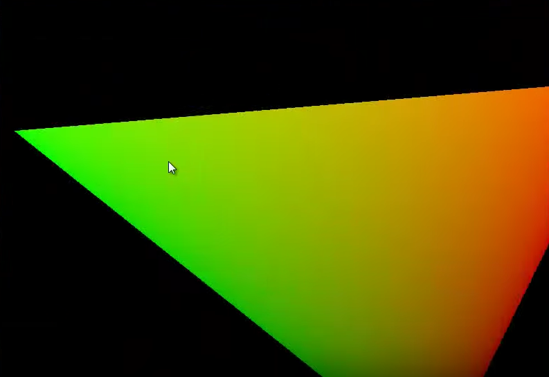
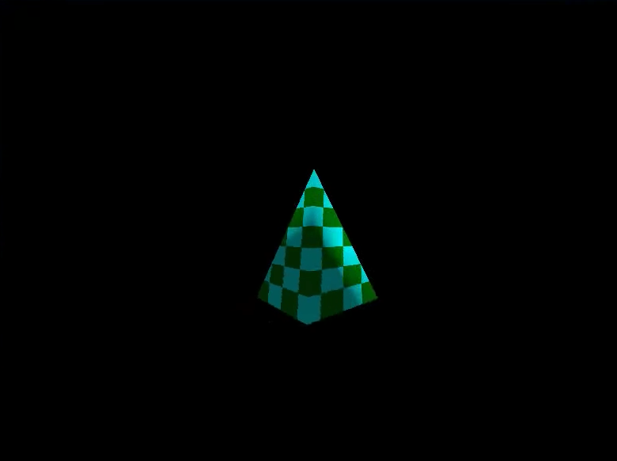

This is where I begin my journey. Initially I googled everything I could find on OpenGL and how to take that which we learned from the labs one step further. I ended up learning from a site called OGL Dev how to draw triangles, how to transform them and how to render them as 3D.

This essentially meant writing my own mathematics classes, a transform class and a shader support class. One of the key goals for the engine was for it to be scalable and therefore using good programming practices when creating classes and methods was very important. With the help of The Benny Box on YouTube I was able to create a class structure that worked well for what I had in mind.

Finally I had something that was presentable - a 3D model that could be transformed and rotated as much as I pleased